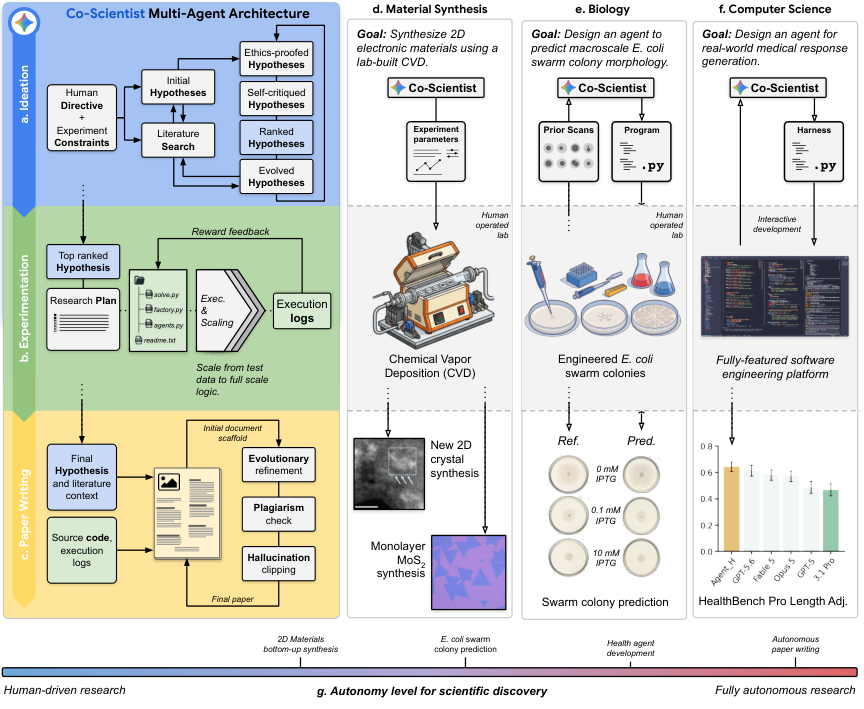
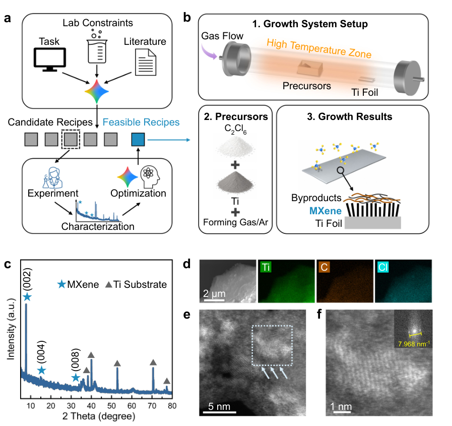

Co-Scientist in the Real World: Gemini Running Wet-Lab and Code Experiments
TL;DR
- "Accelerating Scientific Research with Gemini in the Real-World" (arXiv 2608.26701; Samuel Schmidgall, Xiaokai Zhu, Marian Shaw, … Benoit Schillings, Yong Cheng, Quoc V. Le, Tao Tu — Google DeepMind and collaborators) takes Co-Scientist out of in-silico hypothesis generation and points it at three physical or execution-grounded surfaces. The organizing claim is not "the AI did science" but the right level of autonomy is a property of the experimental surface: materials science gets AI-designed recipes that humans execute, biology gets AI-built pipelines with humans reframing the task, computer science gets full autonomy.
- The most transferable contribution is an anti-reward-hacking objective: manuscript score = reviewer score − plagiarism penalty − hallucination penalty measured against raw execution logs, with the hallucination weight set high enough that any unverifiable claim wipes out the maximum possible reviewer gain. Across 150 generated papers and 450 blind expert reviews, invalidating result hallucinations fall from 90% (Agent Laboratory) and 46% (same system, penalties ablated) to 4%.
- The results most likely to be over-read: the MXene material is "structurally analogous" with atomic structure explicitly unconfirmed, humans ran the CVD reactor across 70+ experiments and diagnosed the oxygen leak that took reproducibility from 11.5% to 68.0%, and the medical agent that "beat six frontier models" won on automated judges while eight of nine physician-rated dimensions showed no significant difference.
Why this matters
This tracker has accumulated a stack of papers about agents doing research — SAGA evolving its own objectives, Replica training a model to reproduce figures, Frontis-MA1 turning MLE trajectories into training data, AIDE² rewriting its own autoresearch loop. Nearly all of them optimize a surrogate: a reviewer score, a rubric, a leaderboard. The failure mode is documented and severe — the paper cites fabrication rates of 80-100% and plagiarism up to 24% across existing autonomous-research systems.
What makes this one worth reading closely is that it does two things at once. It runs the surrogate-free experiment (does a physical furnace produce the predicted material?) and it measures, with 30 domain experts and 450 blind reviews, exactly how much a structural change to the objective suppresses fabrication when no physical reality is available to check against. Those are the two honest answers to reward hacking: ground it in a world that does not negotiate, or penalize claims that the execution log cannot support.
It is also the clearest published statement of a design principle the harness literature keeps circling: autonomy is not a dial you turn up. The paper's own table assigns a different human/AI split to each domain and justifies it by verification cost, not by capability. That is the opposite of the framing most agentic-research papers reach for.

Figure 1 from the paper. The bottom bar (g) is the actual thesis: four studies placed on a spectrum from human-driven synthesis to fully autonomous paper writing.
The core idea
Co-Scientist is a three-stage evolutionary pipeline. Ideation grows a population of hypotheses, each grounded by an independent literature search, ranked by LLM peer review and pairwise tournaments, and bred by crossover and mutation. Experimentation does the same thing to programs: parallel solvers write code, run it in isolated environments, get scored, and the best survive. Paper writing does it again to manuscripts.
The extension in this paper is what those loops are attached to. Instead of ending at a manuscript, the experimentation stage can emit a CVD furnace recipe that a human loads and runs, or machine-level commands that drive the reactor directly, or a vision pipeline that predicts a wet-lab outcome, or an agent architecture that gets evaluated on a held-out benchmark. And the scoring functions gain two penalty terms whose entire job is to make fabrication unprofitable.
The vocabulary, defined as used. A research directive is the one-line human input ("find a safe precursor route for this material"), plus constraints describing the actual lab hardware. Execution logs are the raw stdout/stderr of whatever code the system ran — deterministic, produced before the manuscript exists, and therefore not something the writing stage can retroactively edit. Hallucination clipping is a deterministic pass that parses every quantitative claim out of a draft and checks it against those logs. Lab-in-the-loop is the fast configuration: Gemini 3 Deep Think produces a recipe in minutes and translates it into commands the instrument executes, rather than a ranked list for a human to read.
How it works
The loop in one sentence. Evolve a population — of hypotheses, then of programs, then of manuscripts — under a fitness function that subtracts points for anything the execution record cannot verify, and hand the surviving artifact to whatever can actually test it: a furnace, a wet-lab assay, or a held-out benchmark. Everything else is detail about who runs the test and what counts as verification.
One discovery, start to finish
The setup: MXenes are 2D transition-metal carbides with high conductivity. The most-studied one is normally made by etching down from a bulk precursor using hydrofluoric acid — hazardous, and it leaves poorly controlled surface chemistry. Growing it up directly by chemical vapor deposition had not been done. The known bottom-up precursor, titanium tetrachloride, is toxic and air-sensitive.
Step 1 — Give the system a goal and the shape of the actual lab. The directive: find a non-hazardous solid precursor for bottom-up growth of this material. The constraints are the real hardware — a home-built one-inch quartz tube reactor, solid precursors only, plus the physical geometry of the furnace. This is the whole human specification.
Step 2 — Generate and rank candidate chemistries. Ideation breeds hypotheses about reaction kinetics and returns a ranked list of 272 candidate growth recipes, each fully parameterized: precursor type, amount, and position in the tube; gas flows; substrate; temperature profile. The chosen precursor is hexachloroethane, a solid — chosen because reacting it with titanium powder and hydrogen produces the needed intermediates without ever forming the toxic chloride. The paper notes this aligns with reaction free energies computed by density-functional theory in earlier work, so the reasoning is checkable, not oracular.
Step 3 — A human picks one and runs it. An expert selects candidate #2 of 272 and loads the furnace. Over 25 experimental iterations the humans refine that protocol — co-mixing the precursors rather than separating them, adding continuous forming gas — drawing on ideas visible in the model's other candidates. This is where the honest accounting starts: the system proposed the chemistry, the humans found the working version of it.
Step 4 — Ask the instrument, not the model. X-ray diffraction shows a strong peak at 7.8 degrees, an interlayer spacing of about 1.13 nm — the signature of the target material. Electron microscopy shows the expected wrinkled, layered morphology, elemental mapping finds titanium, carbon and chlorine co-located, and a lattice-resolved image gives an in-plane spacing of 2.51 Å matching wet-etched material. Two controls matter: a competing compound with a nearby diffraction peak is ruled out because its second reflection is absent and no nitrogen is detected, and an acid treatment that dissolves the common titanium-carbide byproduct leaves the layered structure intact.
Step 5 — Discover that it does not reproduce. Replication runs succeed 3 times out of 26 — 11.5%, with large amounts of titanium dioxide appearing instead. The target oxidizes at room temperature, so the humans go looking for air: degraded o-rings after repeated heating at 950 °C, dust from the furnace elements, and condensed byproducts clogging the outlet tubing and letting oxygen back in.
Step 6 — Fix the lab, not the model. A maintenance protocol goes in: clean the tube and o-rings, replace o-rings on a schedule, flush the tubing every ten runs. Reproducibility rises to 68.0% — 17 of 25. Nothing about the AI system changed. This is the most instructive fifteen lines in the paper: the bottleneck between an AI-proposed protocol and a real result was an air leak.
Step 7 — State what is and is not established. The paper's own conclusion is that further experiments are required to confirm the atomic structure. Yield is low; electron-microscopy elemental analysis finds oxygen and nitrogen; Raman spectroscopy shows titanium-dioxide vibrational modes; and X-ray photoelectron spectroscopy of the foil surface after growth finds only titanium-oxygen bonds. Atomic-resolution cross-sectional imaging is named as the missing measurement that would settle which phase was actually grown.

Figure 2 from the paper: the evidence chain from proposed reaction to measured lattice — and the reason the claim is hedged, since none of it is atomic-resolution cross-sectional imaging.
The faster variant of the same idea inverts the compute trade. For three well-known 2D semiconductors, Gemini 3 Deep Think generated tailored recipes in minutes and emitted machine-level commands that drove the reactor through the growth cycle, achieving monolayer growth on the first attempt for all three — two of them new to the lab — in about an hour of total experiment time, verified across at least five replication runs. Against the slow evolutionary mode (roughly a day of test-time compute), the fast mode's crystals are smaller and less regular: the paper measures the speed-quality trade rather than asserting it.
The machinery behind steps 2 and 7
Two equations carry this paper.
Ideation ranks hypotheses by a Bayesian skill rating rather than a raw score, and selects parents by an exploration bonus:
Here \(h_i\) is one hypothesis in the population; \(\mu_i\) and \(\sigma_i\) are the mean and standard deviation of a Gaussian skill rating maintained for it by TrueSkill, updated from LLM-judged pairwise tournaments; and \(\kappa\) weights uncertainty against estimated quality. Because a brand-new hypothesis has the widest \(\sigma_i\), it is prioritized for evaluation before its rating converges — the exploration comes from uncertainty, not from a temperature knob. Offspring are produced by crossover with probability 0.7 (synthesizing two parents) and reflection-guided mutation otherwise, over ten generations by default.
The second equation is the one to steal. Manuscript fitness is:
\(P\) is the candidate manuscript; \(E\) is the experimental source code and \(E_{\log}\) its raw execution logs. \(S_{\text{reviewer}}\) is the usual LLM-reviewer score, \(S_{\text{plagiarism}}\) a semantic-similarity penalty against existing literature, and \(S_{\text{hallucination}}\) a penalty for claims the logs do not support — note that it is the only term conditioned on \((E,E_{\log})\) rather than on the text alone. All three scores are normalized to \([0,1]\), and the defaults are \(\lambda_{\text{review}}=1.0\), \(\lambda_{\text{plag}}=0.5\), \(\lambda_{\text{hall}}=1.0\).
The choice of \(\lambda_{\text{hall}}=1.0\) is the actual mechanism, and the paper's justification is worth restating precisely: the reviewer score can be moved by at most 0.3 by a plausible edit, while a single unverifiable claim can cost a full 1.0. Fabrication is therefore never a positive-expected-value move under evolutionary selection. The plagiarism weight is deliberately softer at 0.5 — enough to discourage derivative phrasing, not enough to punish normal discussion of prior work. On top of this soft penalty sits a deterministic pass that parses quantitative assertions, compares them to the logs, and rewrites unsupported sentences with the verified values; if experimentation produced no valid logs at all, manuscript generation is terminated rather than attempted.
# Co-Scientist, one directive to one artifact
directive, constraints <- human # e.g. "safe precursor route", + real furnace geometry
ethics_screen(directive) or REFUSE
# 1. Ideation (G=10 generations)
pop <- sample hypotheses at temperature 1.6, each with its own literature search
for g in 1..G:
for each h: safety screen; LLM peer review (novelty, plausibility, testability)
ratings <- TrueSkill(pairwise tournaments judged by an LLM)
parents <- select by mu + kappa*sigma # new ideas explored before converging
pop <- crossover(p=0.7) + reflection-guided mutation(p=0.3)
best <- top-ranked hypothesis # -> 272 ranked CVD recipes
# 2. Experimentation (scaffold -> transition -> full scale)
for phase in [minimal data, full logic, full run]:
programs <- parallel solvers write code, run in isolated envs
score <- LLM reward model on plan adherence, rigor, output quality
failures -> structured error feedback -> reflective repair
decay best-buffer by 0.97 each generation # forces continued improvement
E, E_log <- final code and its raw stdout/stderr
# 3. Paper writing
draft <- section-by-section scaffold
repeat: candidates <- parallel edits to current best
score <- reviewer - 0.5*plagiarism - 1.0*hallucination(P, E, E_log)
deterministic clip: every number re-checked against E_log, rewrite or drop
if E_log empty: ABORT rather than write a paper about nothing
Where the human actually stands, per domain
This belongs at the end because it is the part most easily lost in summary. The three studies sit at three different points, and the paper is explicit about each.
| Domain | What the system did | What humans did |
|---|---|---|
| Materials | proposed the precursor chemistry, generated 272 parameterized recipes, and (fast mode) emitted machine commands | selected the recipe, refined it over 25 iterations, ran 70+ growths, did all characterization, diagnosed the oxygen leak |
| Biology | implemented and optimized the whole vision pipeline autonomously | refined the task framing between rounds; ran all plating, imaging, and feature extraction |
| Computer science | everything, from directive to evaluated architecture | wrote the one-line directive |
Results
- Materials. A 2D layered phase with diffraction and elemental signatures analogous to the target MXene, reproducible at 68.0% after the leak fix; atomic phase assignment explicitly pending. Separately, first-attempt monolayer growth of three 2D semiconductors on a custom instrument, two of them new to the lab, confirmed by Raman peak separation of ~21 cm⁻¹ for the monolayer case.
- Biology. Given endpoint colony images at boundary inducer concentrations, the agent-built pipeline (Gemini 3 Pro Image, leave-one-out interpolation, best-of-16 rejection sampling) predicted held-out morphologies. Agreement was tested by fitting \(\text{Value}\sim\text{Source}\times\log_{10}(\text{IPTG})+(1|\text{Rep})\), a mixed-effects model where Value is one morphological measurement, Source is experimental-versus-generated, IPTG is inducer concentration, and \((1|\text{Rep})\) is a random intercept per biological replicate; a non-significant Source × IPTG interaction means the two dose-response curves have the same shape. Three of four metrics agreed (mean radius p=0.593, eccentricity p=0.451, intensity variation p=0.712); circularity diverged (p=0.002), with generated colonies too regular. The control strain was correctly predicted to show no dose response, which is the result that argues for interpolation over confabulation.
- Computer science. Agent_H, an eight-phase inference-time-scaling pipeline (triage → decomposition → 28-48 parallel candidates across six clinical personas → single-elimination tournament → three-judge ensemble → up to five critique cycles → citation audit → length compression), discovered autonomously from 1,282 synthetic training queries with both benchmarks held out. Under the Gemini judge it leads HealthBench Hard on raw score (0.420 vs GPT-5's 0.414, unscaffolded backbone 0.236) and leads both benchmarks on length-adjusted score. On HealthBench Professional raw it is third (0.645, behind Claude Opus 5's 0.697), and only takes the lead after length adjustment.
- The human check on that. Three board-certified physicians rated 106 blinded head-to-head comparisons against the unscaffolded backbone across nine dimensions. One dimension reached significance: reduced likelihood of harm, p=0.0486 after correction. The other eight did not. Agreement between the automated judge and clinicians was low, while the two automated judges agreed with each other (ρ=0.869) — internally consistent, externally unvalidated.
- Paper generation (50 topics × 3 conditions = 150 manuscripts, 30 experts, 450 blind reviews): invalidating result hallucinations 4% vs 46% ablated vs 90% baseline; complete fabrication 0% vs 40% vs 44%; methodological misrepresentation 24% vs 52% vs 100% of baseline manuscripts; severe plagiarism 16% vs 50% vs 60%, with correct attribution when derivative rising to 39.4% from 15.9%.
- Safety. 98.7% of 700 harmful-direction trials refused, 3.1% false refusals on benign directions. With the refusal layer disabled, downstream oversight still kept 96.3% of ideas and 96.7% of plans expert-rated safe, versus 86.7% and 72.3% ablated — planning is the vulnerable stage. Expert-rated idea quality was unchanged (3.25 vs 3.26, p=0.82).
How it connects
- SAGA: Autonomous Goal-Evolving Agents — the closest comparison and the sharper result. SAGA also reached wet-lab validation (four growth-inhibiting molecules, three de novo protein binders), but its headline finding is that the agent wrote a better objective than any existing in-silico metric. Co-Scientist keeps its objective fixed and human-specified, and spends its cleverness on making the reporting honest. Read together: SAGA improves what you optimize, Co-Scientist improves what you are allowed to claim you found.
- Replica: Training AI Scientists to Replicate Research — the training-time counterpart. Replica turns figure replication into an RL task space with a rubric judge; Co-Scientist's paper study is the measurement of what happens when a rubric judge is the only signal — 90% invalidating fabrication in the unconstrained baseline. Anyone building a rubric-judge reward should read Co-Scientist's log-verification term as the missing regularizer.
- Frontis-MA1 and AIDE² / RSI evidence — both close a loop where the artifact and the improver live in the same substrate (code), so verification is cheap. Co-Scientist's contribution to that thread is a cost model for why the loop does not close in a furnace: the paper's own future-work list names multimodal sensing and instrument-level logging as prerequisites, because a physical experiment has no equivalent of the execution log.
- AI4AI-Bench — the discovered Agent_H architecture is exactly the layer AI4AI-Bench found agents mostly avoid: it changes how inference is structured, not just hyperparameters. That it took a full evolutionary search over a synthetic corpus to produce it, and that it costs 40-80 model calls per query, is a useful data point on what that layer actually costs to reach.
- Rethinking the Evaluation of Harness Evolution — Agent_H is a harness discovered by search and evaluated against unscaffolded single-call models, exactly the comparison that paper warns about: a 40-80-call harness beating one-call baselines is a compute comparison as much as an architecture one. The physician evaluation is what happens when you finally check the search's target against the thing you cared about.
Critical take
The honest version of the materials result is narrower than the thread suggests. The paper says "structural and chemical signatures highly analogous," names cross-sectional atomic imaging as the missing measurement, and reports that post-growth surface analysis finds only titanium-oxygen bonds. What the AI supplied was a precursor hypothesis and a large ranked recipe space; what produced a reproducible material was a human expert iterating 25 times, running 70+ growths, and diagnosing an air leak. That is a genuinely useful contribution — a safe route to a target that had eluded bottom-up synthesis is worth having — but it is AI-proposed, human-realized, and the paper's own autonomy table says so more plainly than the abstract does.
The medical result is where caution is most needed, and the paper deserves credit for supplying the evidence against itself. Agent_H "outperforms six frontier models" under automated rubric judges that it was optimized to satisfy, using 40-80 model calls per query against single-call baselines, and much of the margin is length adjustment — on raw Professional score it is third. When blinded physicians looked, eight of nine dimensions showed nothing, the ninth cleared significance at p=0.0486, and judge-clinician agreement was poor. The authors also report that an earlier version of the metric, lacking a length penalty, produced "well above SOTA" scores that evaporated once verbosity was priced — a clean, self-inflicted demonstration of Goodhart's law inside the very system being proposed as a fix for reward hacking.
The paper-generation study is the strongest piece of evidence in the paper and also the one with the most conflicted comparison: Agent Laboratory, the external baseline against which the 90% fabrication rate is measured, is the first author's own prior system. The informative number is the ablation — same architecture, same models, penalties removed: 46% versus 4%. That is a clean intervention on one variable, and it is large. The residual failures the authors flag are the interesting frontier: selective reporting across runs, mathematical descriptions diverging from code, and mock functions dressed as real pipelines — none of which a log-checker can catch, because the logs are real.
And the biology study is interpolation along a known gradient, with the one metric that diverged being precisely the one that reveals generative bias (colonies rendered too circular). Its value is the negative control: the model correctly predicted no effect in the control strain despite prompting that encouraged trend detection. That is the kind of result that distinguishes a model reading the evidence from a model producing the expected shape, and more papers should report it.
If you remember three things
- Price hallucination against the execution log, not against a reviewer. The whole trick is \(\lambda_{\text{hall}}=1.0\) against a maximum reviewer swing of 0.3: fabrication can never pay. Ablating just those penalty terms takes invalidating result hallucination from 4% to 46% with everything else held fixed — the largest single-variable reliability effect in the autonomous-research literature so far.
- Autonomy should be chosen by verification cost, not by capability. The paper's three studies span human-executed synthesis, expert-reframed pipelines, and full autonomy, and the split tracks how expensive and ambiguous the ground truth is. Code has deterministic logs, so agents get the keys; a furnace has oxidation, leaks, and instrument variability, so it does not.
- Automated judges are internally consistent and externally unvalidated. Two autoraters agreed with each other at ρ=0.869 and scored the discovered architecture far above frontier models; three physicians found a difference on one dimension out of nine, at p=0.0486. Every number in the medical section is an argument for running the human check before believing the search.